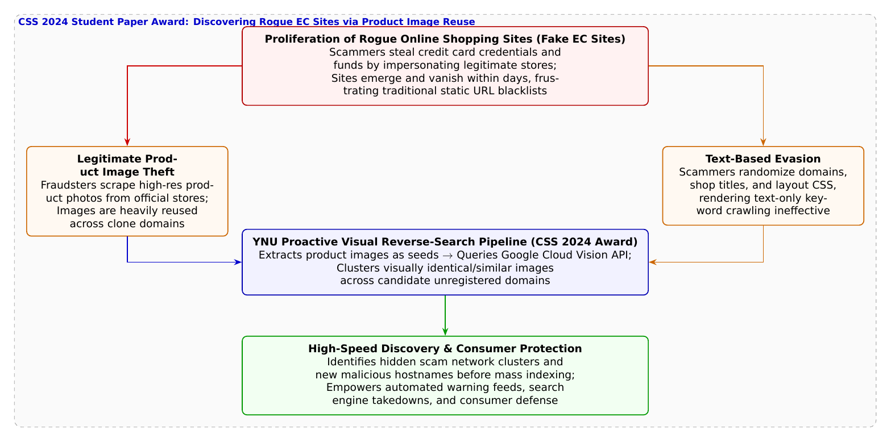

🎨 4コマ漫画挿絵（文字なし）
AI高解像度生成
▲ 【挿絵】青葉台高校 情報科学部＆帝都科学大学サイバーディフェンス・ラボでの実践シーン
💬 4コマ漫画キャラクターセリフ (Story Dialogue Script)
日・英バイリンガル (JA / EN)[悠真]「葵ちゃん待って、クレジットカード情報を入力しちゃダメだ！ それは正規サイトの画像を丸ごと盗用した『偽ショッピングサイト』の可能性が極めて高い！」
[Yuma] "Hold on Aoi, don't enter your credit card! That's almost certainly a fake rogue EC site reusing stolen product images!"
[結衣]「詐欺師がどれほどURLや文章を変えても、被害者を騙すために『魅力的な商品画像』だけは絶対に使い回すはずです！」
[Yui] "No matter how scammers alter text and URLs, they MUST reuse attractive product photos to bait buyers!"
[葵]「わっ、同じ靴の写真を使ってるクローン詐欺サイトが数十件も芋づる式に出てきた！」
[Aoi] "Whoa, dozens of clone scam shops using the exact same sneaker photo popped up like a domino effect!"
[結衣]「見た目の美しさに騙されず、画像データそのものを武器にして消費者を守る……見事な防衛工学です！」
[Yui] "Not falling for deceptive beauty, but weaponizing image data to safeguard consumers... brilliant defensive engineering!"
📖 小説本文
「悠真先輩、これ見てください！ ずっと売り切れてて諦めてた限定モデルのランニングスニーカーが、なんと8割引の3,980円で出てるんです！」
部室のドアを開けるなり、橘葵がスマートフォンの画面を突き出してきた。そこには、有名スポーツブランドの高解像度な商品写真と、「本日限り特別タイムセール・在庫残り3点」という煽り文句が躍っていた。
「ストップ、葵ちゃん！ 絶対に購入ボタンを押したり、カード番号を入れちゃダメだ！」
作業デスクでコードを書いていた城崎悠真が、椅子を蹴るような勢いで立ち上がった。
「えっ……？ でも写真も本物そっくりだし、サイズも選べるよ？」
「写真が本物そっくりなのは当然だ。なぜなら、その画像は**『正規の公式オンラインショップから無断でスクレイピング（自動抜き出し）されたもの』**だからだよ」
悠真は部室のプロジェクターにスマートフォンをミラーリングさせ、URLバーを指差した。
「ほら、ドメイン名を見てごらん。ブランド名とは似ても似つかない `discount-super-sneakers-77.top` のような怪しい使い捨てトップレベルドメインになっている。これは、個人情報やクレジットカード情報を盗み取り、代金を振り込ませても一切商品を発送しない『偽ショッピングサイト（悪質ECサイト）』の典型例だ」
神崎蓮が手元のノートPCでそのサイトのHTMLソースコードを展開した。
「ひどいな……テキスト部分は検索エンジンに引っかからないように画像化されていたり、機械翻訳された不自然な日本語が混ざってる。でも先輩、こういう偽サイトって、通報されてドメインがBANされても、翌日には別のURLで復活するって聞きますけど、どうやって取り締まるんですか？」
「従来のブラックリスト方式――怪しいURLが報告されてからデータベースに登録してブラウザでブロックする方法では、どうしても後手後手に回ってしまうんだ。詐欺グループは毎日何百もの新ドメインを自動生成して乗り換えていくからね」
白石結衣が、メガネの位置を直しながら微笑んだ。
「ですが蓮くん、詐欺グループにも絶対に誤魔化せない『急所』があります。利用者を信じ込ませて買わせるためには、**『魅力的で本物と見分けがつかない高品質な商品画像』**を掲載せざるを得ないということです」
「その通り！」悠真が手を叩いた。「どんなにURLやテキストを偽装しても、彼らは正規店から盗んだ同じ商品画像を何百もの偽サイトで使い回している。そこに着目したのが、横浜国立大学SPIRAL（吉岡克成教授、長谷川深都穂氏、田辺瑠偉氏、藤田彬氏ら）が開発し、情報処理学会CSS 2024で学生論文賞を受賞した**『商品画像をシードとした偽ショッピングサイトの能動的収集技術』**なんだ」
「画像をシードにする……？」葵が目を丸くする。
「うん。手に入れた詐欺サイトの怪しい商品画像を『検索のタネ（シード）』にして、Google Cloud Vision APIなどの高度な画像検索エンジンに投げかけるんだ。すると、文字の検索では引っかからなかった同一・類似の画像を掲載しているWebサイトが、インターネット全体から網羅的にリストアップされる」
「なるほど！ 画像の類似度（ビジュアル・フィンガープリント）を手がかりにすれば、詐欺グループが裏で展開している無数のクローンサイト群が一網打尽に浮き彫りになるわけですね！」
蓮が感嘆の声を上げた。
「その通りだ。さらにこの研究では、収集したWebページの中から本物の正規店を除外し、偽サイト特有のDOM構造や価格表記ルールを照合することで、極めて高い精度で未知の偽サイトを能動的に発見することに成功したんだ」
画面上には、葵が見ていたスニーカーの画像を中心に、クモの巣のように広がっていた40件以上の偽ECサイトのURLが、赤く警告表示されていた。
「うわあ……私、あやうくこの偽サイトの罠に飛び込むところだったんだ……。画像って、ただ見るためのものだと思ってたけど、悪いサイトを炙り出す名探偵の虫眼鏡にもなるんだね！」
「ええ。騙すために使われた偽りの仮面そのものを、真実を暴く手掛かりに変える。技術と着眼点の勝利ですね」
結衣が優しく微笑んだ。偽りの鏡の迷宮は、若きサイバーディフェンダーたちの知性によって、また一つ打ち破られたのだった。
---
📊 セキュリティ構造図解 (TikZ LuaLaTeX生成)
国家安全基準・工学図解
▲ 【技術構造図】IPAデジタルスキル標準・国際規格に準拠した仕組みのモデル化